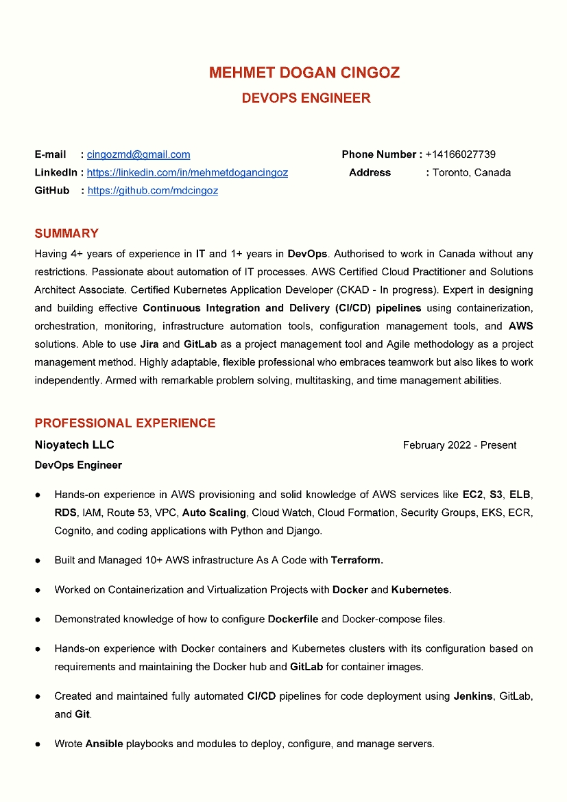

Automated the build & deployments for many applications from end-to-end using CI/CD strategies with
various DevOps tools and technologies.
Monitored, analysed, and reported performance statistics for cloud-hosted environments by using AWS
Cloud Watch, Prometheus , Grafana .
Built and configured 150+ EC2 instances on AWS cloud platform, the configuration of elastic load
balancer ( ELB ) for traffic control for the EC2 instances and S3 .
Created and managed Elastic Load Balancers and Auto Scaling Groups for high availability and
scalability.
Extensive knowledge of the configuration of AWS EC2, Launch Templates , IAM Policy , Role, Instance
Profile, and Security Group.
Experienced in networking, Installing, and configuring application software on servers following
prescribed instructions, such as creating Subnets , NACLs , EIPs, VPC Peeing blocks with AWS VPC .
Responsible for deployments of products using PostgreSQL and were written in python.
Wrote 5+ Bash scripts for daily maintenance activities, including indexes and table analyses.
Develop and automate standard operating procedures around common failure scenarios.
Used GitLab as a project management tool.
Kilim Computer and Software June 2019 - March 2020
Information Technology Officer
Developed a plan for the company website and determined factors such as project scope cost, work plan
and materials.
Managed the implementations of the project relating to the company's hardware, software and
networking devices.
Installed and configured security applications.
Planned IT interns working on this project, assigning the task and ensuring work is on schedule and
within the budget.
TECHNICAL SKILLS

Python | SQL | HTML | CSS | Linux | Git | GitHub | GitLab | Cloud(AWS) | CloudFormation | EC2 | ECR |
DynamoDB | CloudFront | S3 | API GW | Lambda | EFS | Boto3 | CloudWatch | RDS | MariaDB | ALB with
ASG | Apache | Nginx | Snapshots | Volumes | VPC | Route53 | Certificate Manager | IAM | AMI | Jenkins |
Docker | Kubernetes | Jira | ClickUp | Slack | Ansible | Terraform | Scrum/Kanban
SOFT SKILLS
| Motivation | Initiative | Leadership | Teamwork | Flexibility | Critical Thinking | Problem Solving |
PROJECTS
ML-HUB Application
ML-Hub is an AI and NLP for healthcare project that provides software, models, and data to help
healthcare and life science organisations build, deploy, and operate AI projects.
In this Project, we;
Dockerized Web Application developed in React, Java SpringBoot, and Spring Cloud
Frameworks and integrated with PostgreSQL database.
Use Gateway API and Generic Data API for Project dockerized microservices.
AWS Cognito and EKS are the backbones of our Project.
Used Gitlab as a project management tool.
Created full microservices, Gitlab CI/CD Pipelines, and deployment on a Kubernetes cluster
with monitoring.
Built Dockerfiles for each microservices.
Used Terraform as Infrastructure as a Code (IaaS) to automate the creation of infrastructure
in each pipeline.
Handled the dynamic inventory that includes EC2 instances into the inventory by checking
their tags.
Load Balancers and Auto Scaling Groups for high availability and scalability.
Automated the build & deployments for many applications from end-to-end using CI/CD strategies with
various DevOps tools and technologies.
Project Boss
Bootcamp Operating System
Modular Customer Relationship Management (CRM) application for end-to-end production.
Deployment on K8s cluster to AWS.
Used Gitlab Issues as an agile implementation tool.

Created full microservices, CI/CD Pipelines with GitLab, and deployment on a Kubernetes cluster with
monitoring.
Built Docker files for each microservices.
Built a Docker Compose file to work in a development environment.
Used Terraform as Infrastructure as a Code (IaaS) to automate the creation of infrastructure in each
pipeline.
EDUCATION
Clarusway IT School
September 2021 - August 2022
AWS DevOps Engineering (Certificate)
International Language Academy Of Canada
September 2018 - May 2019
Business English (Certificate)
Istanbul Gelisim University - Faculty of Engineering September 2014 - July 2020
Industrial Engineering (Bachelor of Science - Double Major)
Istanbul Gelisim University - Faculty of Management September 2012 - July 2017
International Finance (Bachelor of Science)
CERTIFICATIONS
Clarusway AWS/DevOps Course Certification
AWS Certified Cloud Practitioner
AWS Certified Solutions Architect Associate
Certified Kubernetes Application Developer (CKAD - In Progress)
LANGUAGES :
Turkish : Native
English : Advanced